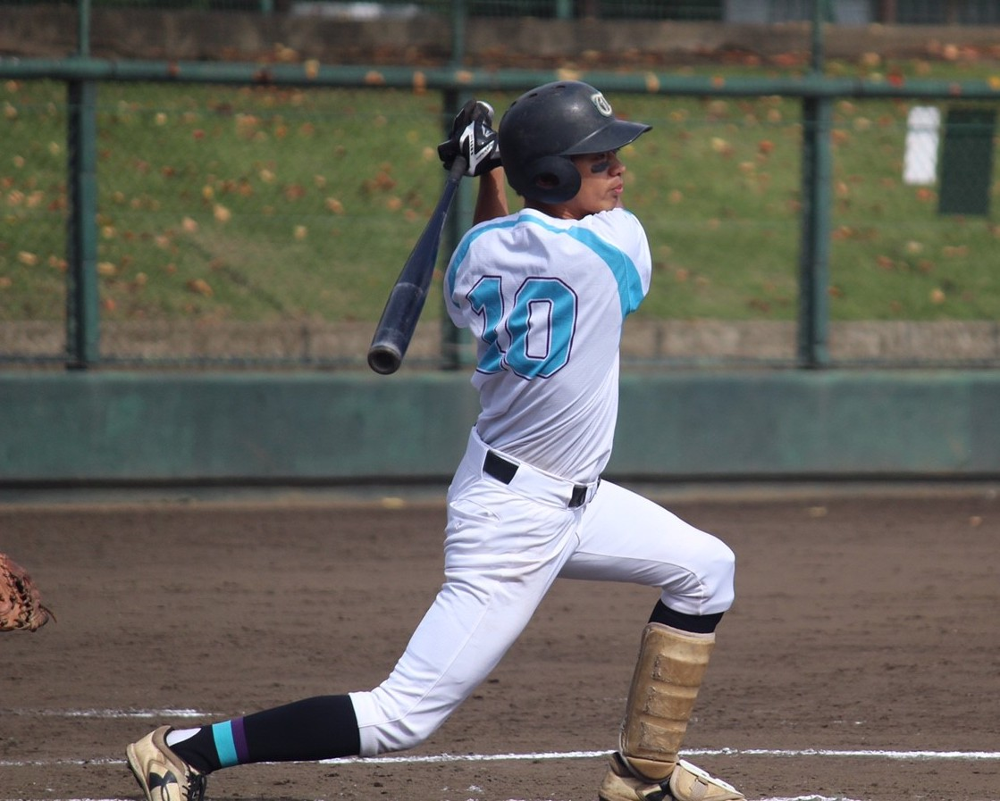

所属
- 筑波大学大学院 システム情報工学研究科
コンピュータサイエンス専攻 博士前期課程1年 - インタラクティブプログラミング研究室(IPLAB) UBIQUITOUSチーム
学会
- IEEE 学生会員
連絡先
文献情報
国際会議（査読付き）
-
Yutaro Suzuki, Kodai Sekimori, Buntarou Shizuki, and Shin Takahashi
Touch Sensing on the Forearm Using the Electrical Impedance Method
2019 IEEE International Conference on Pervasive Computing and Communications Workshops (PerCom Workshops). Kyoto. March, 2019.
卒業論文
- 鈴木 雄太郎
電気インピーダンス法を用いた前腕におけるタッチ位置及び手形状の識別
研究内容
表彰
-
筑波大学 平成30年度情報学群長賞 (2019年3月)
学内活動
-
筑波大学 情報科学類説明会
デモ展示, 2018年8月 -
筑波大学 社会国際総合学群「国際学Ⅳ」
ティーチングアシスタント，2019年4月〜2019年7月
課外活動
-
筑波大学 体育会 準硬式野球部
主将 (2016年11月〜2017年10月)
略歴
- 2012年(平成24年) 4月 桐朋高等学校 入学
- 2015年(平成27年) 3月 桐朋高等学校 卒業
- 2015年(平成27年) 4月 筑波大学 情報学群 情報科学類 入学
- 2019年(平成31年) 3月 筑波大学 情報学群 情報科学類 卒業
- 2019年(平成31年) 4月 筑波大学大学院 システム情報工学研究科 コンピュータサイエンス専攻 入学